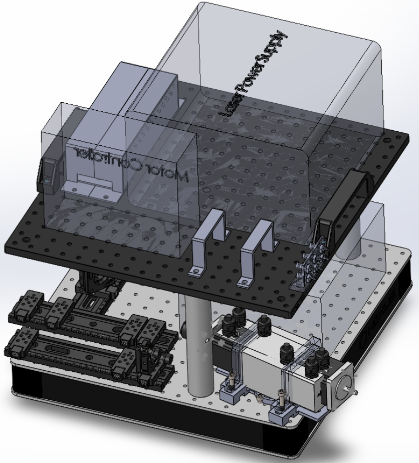
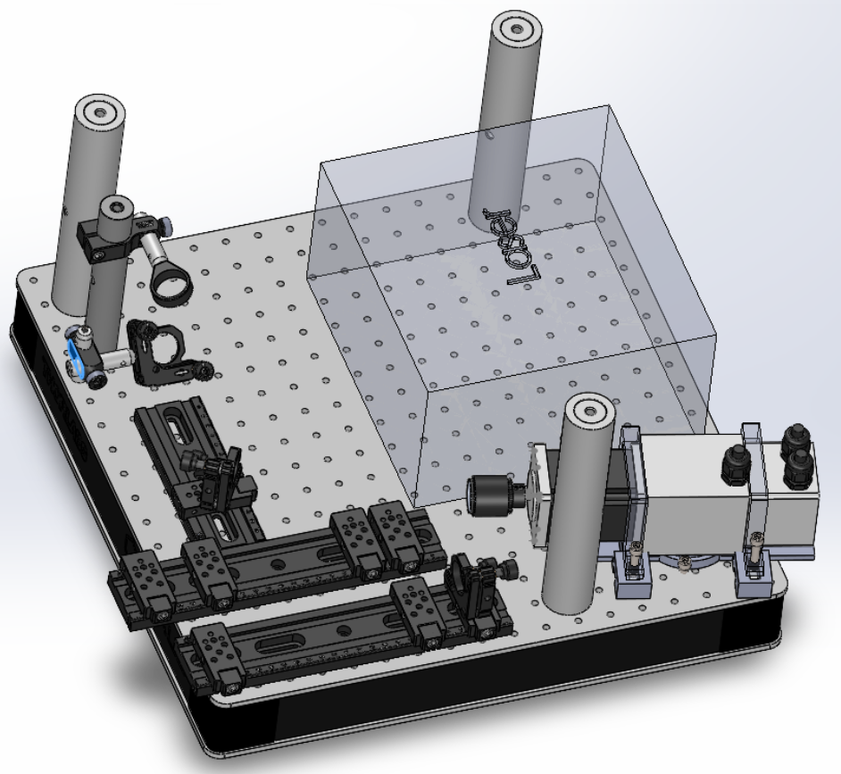
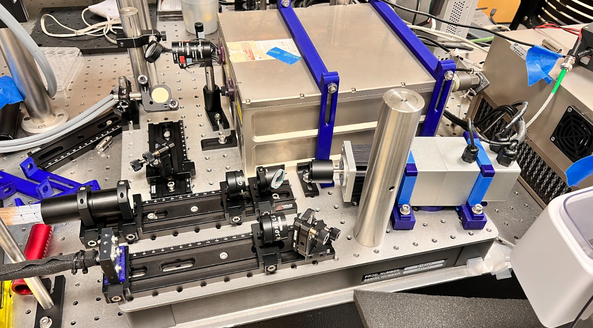

uWAMIT — Ultrasound-based Washington Molecular Imaging & Therapy Center
Mechatronics Research Assistant



Overview
Mechatronics and software for photoacoustic-ultrasound imaging: Python API/GUI for user control, CAD for hardware encasing, and PSO (Position Synchronized Output) trigger design to sync laser pulses with ultrasound scanning.
Python API and CAD
- Wrote Python GUI using hardware API, including all necessary components for the user workflow
- Designed AC/DC power supply encasing and cable clips (CAD)
PSO trigger for photoacoustic imaging
- Used Aerotech motor software and stage to output precise laser pulses for photoacoustic imaging, run concurrently with ultrasound scanning
- Ran motor at 17,400 deg/s (2,900 rpm) while determining PSO trigger output
- Trigger timing based on total fixed time, ON time, and number of pulses
How
- Partnered with GE HealthCare; scoped requirements, designed and 3D-printed custom optical and mechanical subsystems, and managed integration timelines against clinical-grade performance targets.
- Resolved laser-timing jitter at 1000 Hz that was degrading image resolution: designed a pulse synchronization mechanism and validated it through iterative subsystem testing to meet clinical-grade targets.
- Python API/GUI for user control; CAD for power supply encasing and cable clips; PSO (Position Synchronized Output) trigger to sync laser pulses with ultrasound scanning. Contributed to 2 co-authored publications and a SPIE Photonics West presentation.